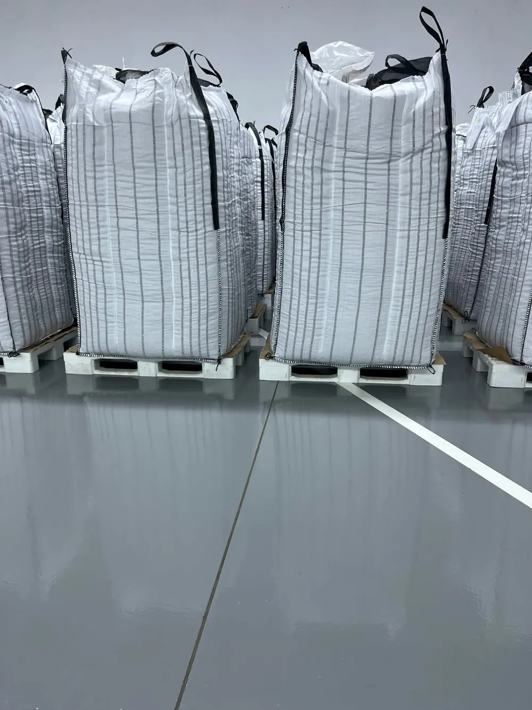
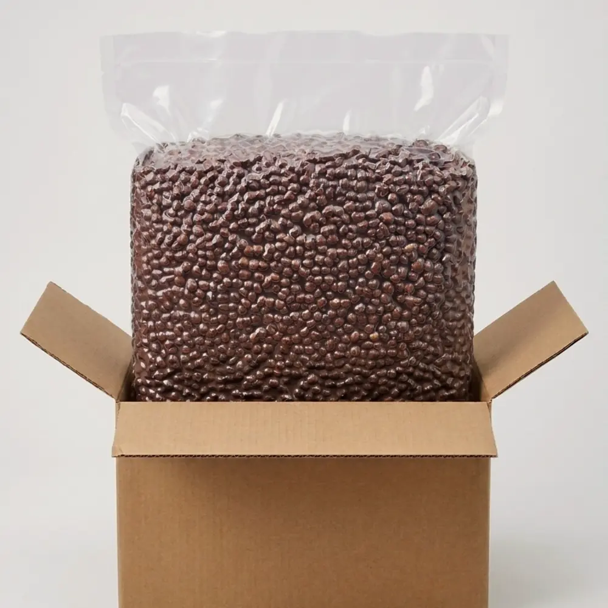

Натуральные ядра фундука
Отборные натуральные ядра фундука премиум-класса, тщательно обработанные для производителей продуктов питания.
- Влажность
- Max. 6%
- Калибры
- 9–11 mm, 11–13 mm, 13–15 mm
Шесть продуктовых линеек — каждая обрабатывается по точным спецификациям влажности и размера и поставляется в оптовой и розничной упаковке.
Отборные натуральные ядра фундука премиум-класса, тщательно обработанные для производителей продуктов питания.
Тщательно бланшированные ядра фундука без кожицы для различных пищевых производств.
Тщательно обжаренные ядра фундука с насыщенным вкусом и ароматом для кондитерского и пищевого производства.
Обжаренный фундук, измельчённый до разных размеров частиц для промышленного применения.
Тонко измельчённая мука из фундука для кондитерских, хлебопекарных и других пищевых производств.
Натуральный отборный фундук в скорлупе.
Калибр, степень обжарки, размер частиц и упаковка могут быть адаптированы под ваши производственные требования. Свяжитесь с отделом продаж.

